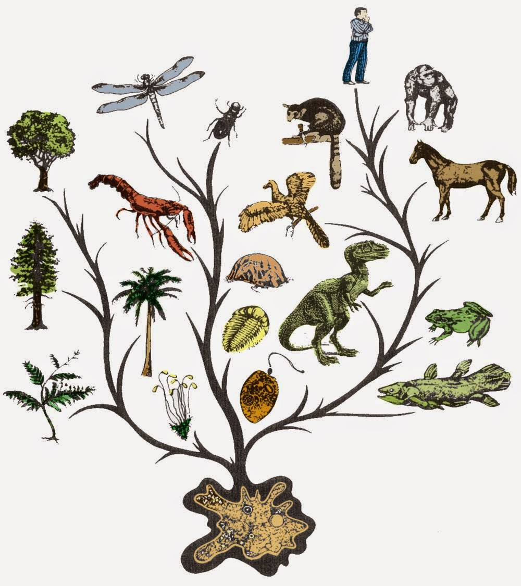

วิวัฒนาการของสิ่งมีชีวิต
วิวัฒนาการ (Evolution) หมายถึง การเปลี่ยนแปลงลักษณะทางพันธุกรรมของประชากรสิ่งมีชีวิตเมื่อเวลาผ่านไปหลายชั่วรุ่น ซึ่งเป็นพื้นฐานสำคัญที่ทำให้เกิดความหลากหลายของสิ่งมีชีวิตบนโลก ความแตกต่างทางพันธุกรรมอาจเกิดจากการกลายพันธุ์และการสับเปลี่ยนสารพันธุกรรมระหว่างการสืบพันธุ์ ชาลส์ ดาร์วิน เป็นผู้เสนอแนวคิดการคัดเลือกโดยธรรมชาติ โดยอธิบายว่าสิ่งมีชีวิตที่มีลักษณะเหมาะสมกับสภาพแวดล้อมมีโอกาสรอดชีวิตและสืบพันธุ์ได้มากกว่า ทำให้ลักษณะดังกล่าวพบมากขึ้นในประชากรเมื่อเวลาผ่านไป หลักฐานที่สนับสนุนวิวัฒนาการมีหลายประเภท เช่น ซากดึกดำบรรพ์ที่แสดงให้เห็นสิ่งมีชีวิตในอดีต โครงสร้างร่างกายที่มีพื้นฐานร่วมกัน เช่น กระดูกขาหน้าของมนุษย์ ค้างคาว และวาฬ รวมถึงการศึกษาตัวอ่อนและข้อมูลทางพันธุกรรม การศึกษาวิวัฒนาการช่วยให้เข้าใจต้นกำเนิดและความสัมพันธ์ของสิ่งมีชีวิต และยังนำไปใช้ประโยชน์ในด้านการแพทย์ เช่น การศึกษาการดื้อยาของแบคทีเรีย และด้านการอนุรักษ์ความหลากหลายทางพันธุกรรม